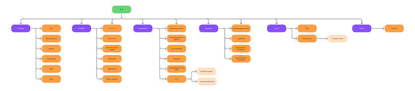
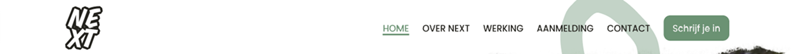
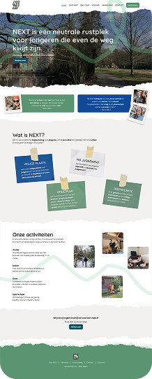
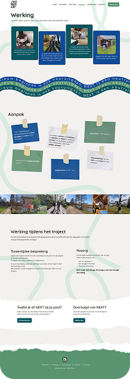
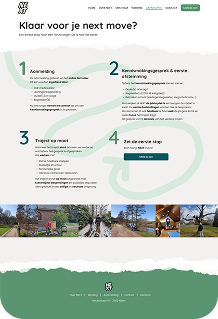
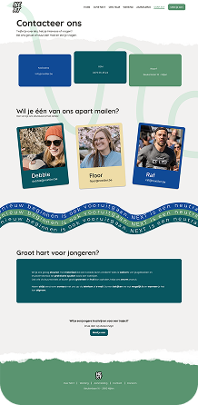

NEXT — Website en branding
Voor Project NEXT werkte ik in een team aan een nieuwe branding en website voor een organisatie die jongeren van 13 tot 19 jaar ondersteunt wanneer zij vastlopen op school, thuis of in hun sociale omgeving.
We vertaalden de warme, laagdrempelige werking van NEXT naar een duidelijke digitale ervaring. Mijn bijdrage lag bij UX/UI-design, branding, informatiearchitectuur en de implementatie van delen van de website in Bludit.
De opdracht
NEXT was nog een beginnende organisatie en wilde een duidelijke basis creëren voor haar communicatie. De opdracht bestond uit het ontwerpen van een website en een nieuwe visuele identiteit. De website moest uitleggen wat NEXT doet, voor wie de organisatie werkt, hoe een traject verloopt en hoe iemand zich kan aanmelden.
De uitdaging was om de warme en persoonlijke werking van NEXT te vertalen naar een digitale ervaring die tegelijk duidelijk en betrouwbaar is. De website moest jongeren niet afschrikken met een formele stijl, maar ook voldoende informatie bevatten voor ouders, scholen en CLB-medewerkers.
Daarnaast moest de inhoud overzichtelijk worden meegegeven, omdat NEXT hier zelf tijd en aandacht aan had besteed. We moesten daarom een evenwicht zoeken tussen inhoudelijke volledigheid en een aangename gebruikerservaring.
Tijdlijn van het Project NEXT
Research en kennismaking
Onze research bestond uit verschillende bronnen. We kregen een video waarin de medewerkers van NEXT een rondleiding gaven en uitlegden hoe hun omgeving en activiteiten eruitzagen. Daardoor kregen we niet alleen informatie over de organisatie, maar ook een visueel beeld van de plek waar jongeren terechtkunnen.
Daarnaast ontvingen we een uitgebreide infobrochure. Deze brochure bevatte informatie over de doelgroep, werking, aanpak, waarden, missie, visie en het team van NEXT. Omdat de teksten door de organisatie zelf waren geschreven en Debbie aangaf dat deze informatie belangrijk was, gebruikten we de brochure als belangrijke inhoudelijke basis voor de website.
We namen de informatie niet zomaar over, maar onderzochten hoe we deze inhoud het best konden verdelen over verschillende pagina’s. De informatie over jongeren en de aanpak kwam voornamelijk op de pagina “Werking”. De waarden, missie, visie en omgeving werden verdeeld over de pagina “Over NEXT”.
Onze groep maakte daarnaast een moodboard, een eerste branding, een navigatiestructuur, een Brief of Concept en een offerte. Deze onderdelen presenteerden we aan NEXT. Tijdens deze presentatie kregen we belangrijke feedback over de visuele richting.


Eerste visuele richting
Onze eerste visuele richting vertrok vanuit de veilige en rustige omgeving van NEXT. We kozen voor lichte, natuurlijke kleuren en beelden die rust, natuur en ademruimte uitstraalden.
Voor het eerste logo-idee gebruikten we een klavertje vier. Dit symbool verwees naar geluk en nieuwe kansen en sloot aan bij de groene omgeving van NEXT.
De eerste branding bevatte een zachte en rustige sfeer. Debbie vond de typografie en kleuren grotendeels goed, maar tijdens de feedback bleek dat de totale uitstraling onvoldoende kracht uitstraalde.
Deze feedback betekende dat we onze richting moesten herbekijken. We behielden de natuurlijke en warme basis, maar onderzochten hoe we meer contrast, energie en visuele kracht konden toevoegen.
Branding & logo
Na de feedback onderzochten we meerdere visuele richtingen. We maakten verschillende kleurenpaletten en experimenteerden met contrast, kleurintensiteit en de combinatie van natuurlijke tinten met donkere accenten.
Uiteindelijk koos Debbie voor het palet dat het dichtst bij onze oorspronkelijke richting lag, maar met een donkerdere groene tint. Hierdoor kreeg de branding tegelijk meer rust en meer kracht.
Ook het logo doorliep verschillende iteraties. We testten verschillende lettertypes, kleurcombinaties en letterplaatsingen. Naast typografische variaties onderzochten we ook symbolische richtingen, zoals een vuist, vuur en een pijl die in één van de letters verwerkt kon worden.
Deze slogan vond Debbie bijzonder sterk, omdat hij de kern van NEXT samenvat: jongeren krijgen er de mogelijkheid om even opnieuw te beginnen, zonder dat dit betekent dat ze stilstaan. Het logo en de slogan werden door NEXT goedgekeurd.
Informatiearchitectuur
Onze eerste navigatiestructuur werd na overleg met Debbie aangepast. In de beginfase waren bepaalde onderwerpen anders gegroepeerd, maar NEXT gaf aan dat “Ons team” een aparte pagina moest worden.
Daarnaast wilde Debbie vermijden dat de pagina’s te lang werden en bezoekers te veel moesten scrollen om informatie te vinden.
De finale website bestaat uit de volgende hoofdonderdelen:
- Home.
- Over NEXT.
- Werking.
- Aanmelding.
- Ons team.
- Contact.
Deze structuur verdeelt de inhoud volgens de belangrijkste vragen van bezoekers. “Over NEXT” legt uit wie de organisatie is en waar ze voor staat. “Werking” geeft meer praktische informatie over de doelgroep, dagstructuur en aanpak.
Op elke pagina staat onderaan een call-to-action naar het aanmeldformulier. Daarnaast staat er ook in de navigatie een duidelijke knop naar de aanmelding.

Wireframes & iteraties
Na het vastleggen van de navigatiestructuur maakten we wireframes voor de belangrijkste pagina’s. De wireframes hielpen ons om de inhoud, layout en volgorde van de onderdelen te onderzoeken voordat we alles visueel uitwerkten.
We maakten meerdere versies. De leerkrachten gaven voornamelijk feedback over de layout, de plaatsing van secties en de algemene structuur. Debbie gaf vooral feedback over de inhoud en de gewenste pagina’s.
De verschillende versies tonen dat het ontwerp niet in één keer vastlag. We onderzochten welke informatie op de homepagina moest staan, hoe de werking kon worden uitgelegd en hoe de aanmeldingsflow duidelijk kon worden gemaakt.
High-fidelity design
Toen de basisstructuur voldoende duidelijk was, begonnen we aan de high-fidelity designs in Figma. We werkten aanvankelijk met vier mogelijke kleurenpaletten. Deze versies presenteerden we aan Debbie, waarna zij koos voor de groene richting met een donkerdere groentint.
De high-fidelity designs brachten de branding tot leven. We gebruikten de golvende lijnen als herkenbaar visueel element en combineerden deze met foto’s, post-its, polaroids en kaarten. Hierdoor kreeg de website een persoonlijke en minder formele uitstraling.
De meeste inhoud staat op de pagina “Werking”. Om deze pagina niet te zwaar te maken, gebruikten we visuele onderbrekingen, fotolijnen en duidelijke blokken.
Implementatie in Bludit
Na de ontwerpen bouwden we de website volledig op in Bludit. Een groepslid zette de omgeving klaar en onderzocht hoe het CMS werkte. Daarna verdeelden we de pagina’s en begonnen we met de implementatie.
Mijn persoonlijke bijdrage aan de technische fase bestond uit het schrijven van de code voor de pagina “Over NEXT” en het meewerken aan de code van de contactpagina.
Tijdens de implementatie merkten we dat niet elke ontwerpkeuze automatisch goed vertaald werd naar verschillende schermformaten. Vooral op mobiel sprong tekst soms uit de post-its in plaats van binnen de vormen te blijven.
Er was een live link beschikbaar via een gratis implementatie, maar deze werkte traag. Daarom zou ik in een definitieve portfolio-presentatie vooral kwalitatieve screenshots van de website tonen en de live link alleen toevoegen wanneer deze betrouwbaar werkt.
Feedback en finale selectie
Tijdens het project presenteerden we verschillende versies aan NEXT. De eerste richting werd bijgestuurd omdat ze volgens de klant te veel rust en kalmte uitstraalde. Daarna onderzochten we meerdere kleurenpaletten, logo’s en typografische richtingen.
De groene richting bleef behouden, maar de donkerdere tint zorgde voor meer kracht. Ook de navigatiestructuur en de inhoudelijke verdeling werden meerdere keren besproken.
In totaal werkten we ongeveer negen iteraties uit in Figma. Door de feedback te verwerken konden we het ontwerp steeds beter afstemmen op de verwachtingen van NEXT.





